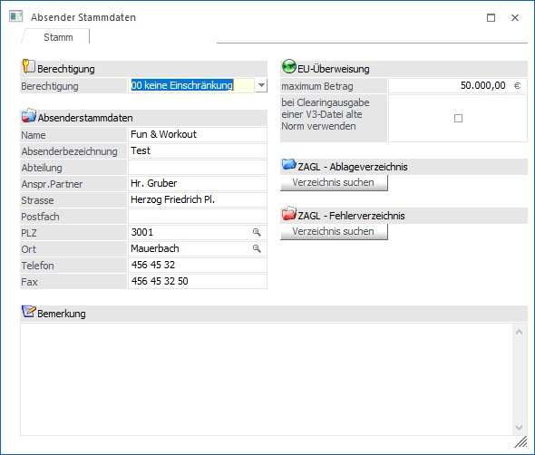

Die Absender-Stammdaten sind die Basis für die Übergabe von elektronischen Daten (Zahlungen, Bankeinzug, Auslandszahlungsverkehr) an die Bank. Sie umfassen Name, Adresse, Tel.-Nr. etc. des Auftraggebers. Diese Daten werden der Bank auf den Begleitbelegen zur Clearingdiskette übergeben und sind die Grundlage für Rückfragen der Bank an den Auftraggeber.
Die Absender-Stammdaten werden im Menüpunkt
1 Stammdaten
1 Zahlungsstammdaten
1 Clearing-Absender
hinterlegt.

Ø Berechtigung
Für die Absender-Stammdaten kann ein Berechtigungsprofil vergeben werden. Wenn der Anwender die Absender-Stammdaten aufruft, wird geprüft, ob der Anwender einer Benutzergruppe zugeordnet wurde, welche in dem Profil enthalten ist und ob somit eine Bearbeitung erlaubt wäre (nähere Informationen entnehmen Sie bitte dem WinLine ADMIN - Handbuch).
Hinweis
Benutzern des Typs "Administrator" oder mit der Administratorenberechtigung "Benutzeradministrator" steht in der Auswahlbox der Punkt ">> Neues Profil" zur Verfügung. Über die Anwahl dieses Eintrags kann in der Folge ein neues Berechtigungsprofil angelegt werden.
Ø Name
Eingabe des Firmennamens. Die Bezeichnung darf max. 30 Stellen lang sein.
Ø Absenderbezeichnung
In diesem Feld wird eine eindeutige Kennung eingetragen, die die Bank vergibt. In Österreich wird in diesem Feld die DVR-Nummer mit verschlüsselt.
Ø Abteilung
Hier kann eine Abteilung eingegeben werden, die für den Zahlungsverkehr verantwortlich ist.
Hinweis
Bei der Ausgabe von Clearing-Dateien in ein V3-Format, wird die Abteilung auf 17 Stellen gekürzt.
Ø Anspr. Partner
Eingabe des Namens des Ansprechpartners, max. 30 Stellen. In der Regel sollte hier der Name des Sachbearbeiter, der die CLEARING-Datei erstellt hat, eingetragen werden.
Ø Straße
Eingabe der Adresse des Absenders, max. 30 Stellen.
Ø Postfach
Erweiterung des Adressfeldes, die Eingabe kann max. 20 Stellen lang sein.
Ø PLZ
Eingabe der Postleitzahl, max. 9stellig. Durch Drücken der F9-Taste kann nach allen angelegten Postleitzahlen gesucht werden.
Ø Ort
Eingabe des Firmensitzes, max. 25stellig. Durch Drücken der F9-Taste kann nach allen angelegten Orten gesucht werden.
Ø Telefon
Eingabe der Telefonnummer, max. 15 Stellen.
Ø Fax
Eingabe der Faxnummer, max. 15 Stellen.
Ø Bemerkung
Eingabe einer Bemerkung.
Ø EU-Überweisung max. Betrag
In diesem Feld kann jener Betrag angegeben werden, bis zu dem eine "EU-Überweisung" durchgeführt werden soll. Ab 01.01.2006 sind dies € 50.000,--.
Übersteigt der Überweisungsbetrag diesen Wert, so wird die Überweisung NICHT mehr als "EU-Überweisung" ausgewiesen.
Ø Bei Clearingausgabe einer V3-Datei alte Norm verwenden
Durch diese Checkbox wird gesteuert, ob bei einer Clearingausgabe einer V3-Datei die alte oder die neue Norm (seit Juli 2003/von den Banken seit Jänner 2004 akzeptiert) verwendet werden soll.
Falls es zu bei einer Bank zu Problemen mit der neuen Norm kommen sollte, kann hier auf das alte Format umgestellt werden.
ZAGL-Dateien
Im Absenderstamm kann man generell vorbelegen, wohin die ZAGL-Dateien verschoben werden sollen. Im Absenderstamm müssen, wenn mit den Verzeichnissen gearbeitet werden soll, beide Verzeichnisse gefüllt sein. Die Zahlungsausgleichs-Datei wird nur in diese Verzeichnisse verschoben, wenn im Bankenstamm keine ZAGL-Verzeichnisse hinterlegt sind.
Ø ZAGL - Ablageverzeichnis
Hier landen die Dateien, die problemlos eingelesen werden konnten.
Ø ZAGL - Fehlerverzeichnis
Fehlerhafte ZAGL-Dateien landen in diesem Verzeichnis. Als fehlerhaft wird z. B. ausgewiesen, wenn die Bank in der Datei nicht mit der ausgewählten Hausbank übereinstimmt.